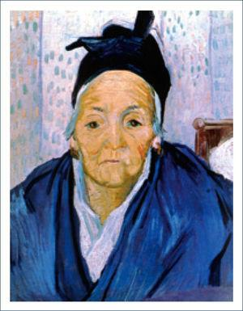

ANCIANA DE ARLES

La portada, de acuerdo al tema central de esta Revista, corresponde a una mujer
anciana de Arles (Sur de Francia), del pintor holandés Vincent Van Gogh, y se
encuentra en el Museo Van Gogh de Ámsterdam (Holanda). Corresponde a un periodo
de su vida que vivió en Arles y se dedicó a realizar retratos de personajes locales,
a los cuales debía convencer que posaran para él.
A partir de este número queremos innovar en la portada de Revista Médica Clínica Las
Condes, relacionando el Arte con la Medicina. Para esto seleccionaremos diversas obras
de arte que tengan que ver con el tema central o que relacionen ambos temas. Los invitamos
a sumarse a esta iniciativa, y esperamos ideas que pueden ser enviadas como cartas al Editor.